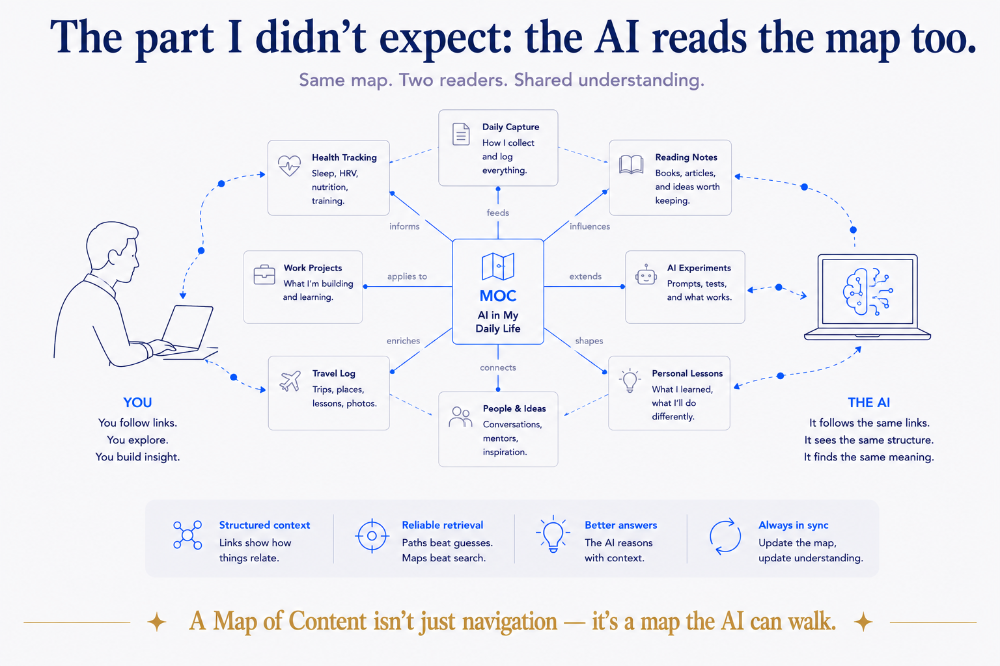
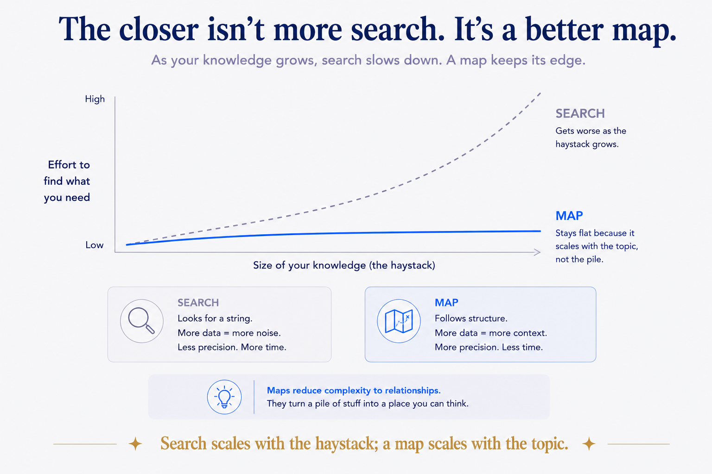

The moment search stops working
Every knowledge system starts small enough that search is fine. A few hundred notes — type a word, find the thing. So you never build any navigation, because you never need it.
Then it grows. A few thousand notes, then tens of thousands. And search quietly stops being enough. You search "positioning" and get eighty hits across five years, half of them irrelevant, with no sense of which three actually matter or how they relate. Search tells you where a word appears. It doesn't tell you what belongs together, or in what order, or which is the real one. At scale, a search result is a pile, and you're back to the problem structure was supposed to solve.
The answer isn't a better search box. It's a map.
What a Map of Content is
A Map of Content — a MOC, the term comes from Nick Milo's work on linking your thinking — is deceptively simple: a note whose whole job is to point at other notes. A curated index for one topic, project, or domain, that gathers the pieces belonging together and links them in a sensible order, with a sentence of context each.
It's the hand-made table of contents for a corner of your knowledge. Not generated, not automatic — authored. You decide what belongs on the "positioning" map, what order it goes in, what's central and what's supporting. That authorship is the entire value: a MOC encodes judgment that no search and no tag can.
Contrast it with the two things people reach for instead:
- Search finds a word. It has no opinion about relevance or relationship — it returns everything, ranked by a machine that doesn't know your work.
- A tag is a flat label you hope you applied consistently and can match later. It says "these share a keyword." It doesn't say how they relate, which matters most, or where to start.
- A MOC is a map. It says: here are the notes on this topic, here's how they connect, start here. Structure and intent, not just co-occurrence.
At small scale you don't feel the difference. At scale, the map is the only one that still works.
The part I didn't expect: the AI reads the map too
Here's the insight that made me sit up, and it ties this whole series together.
In the tagging piece I made the case that an AI doesn't query a tag index — it reads: it greps, follows paths, traverses links. Carry that one step further and something clicks: if the AI follows links, then a MOC isn't just human navigation. It's a map the AI can walk.

Give an assistant the "positioning" MOC and you've handed it a curated set of pointers to exactly the relevant notes, in a sensible order, with context about each. Instead of grepping blindly across eighty keyword hits and guessing which matter, it follows the map — the same map you'd follow — straight to the right material. You've done the hard judgment of "what belongs and what matters" once, as an author, and now both you and the AI benefit from it every time.
This is the deeper reason maps beat search, and it's true for humans and agents alike: search scales with the size of the haystack; a map scales with the structure of the topic. When the haystack is huge, searching it is a losing game — for you and for the model. A map sidesteps the haystack entirely. It doesn't search the territory; it is the territory, drawn small.

Why this is the tagging lesson, one level up
I wrote earlier that tags mostly don't help an AI retrieve, because they usually just echo words already in the text — structure and path do the work instead. A MOC is that same lesson taken up a level.
A tag says "these things share a label" and stops. A MOC says "these things belong together, here's how, here's where to begin" — it's authored structure, the deliberate kind. It carries the one thing a flat label can't: your judgment about relationship and priority. And because it's a real note full of real links, it's exactly the kind of structure an AI can follow, where a tag is just a word to match. Tags are a substitute for structure; a MOC is structure — the navigational kind.
Same through-line as everything in this series: the value isn't in labeling your stuff. It's in giving it a deliberate shape. A MOC is that shape, drawn as a map.
The honest caveat
Maps cost what tags don't: they're hand-made, and they go stale. A tag is free to slap on; a MOC you have to write and tend as the topic grows. That's a real cost, and it's why you don't map everything — you map the topics big and alive enough to be worth a map, and let the small stuff stay findable by path and search. The discipline is knowing which corners of your knowledge have earned a map and which haven't yet. Over-mapping is just a different kind of clutter.
Start with one map
For any topic that's grown past what search handles well, write a MOC — a note that gathers the key pieces, links them in order, says a line about each, and names where to start. Then hand that same map to your AI and watch it stop guessing. You can build your first one this afternoon for whatever topic you're drowning in.
The harder thing is a system of maps over a whole body of knowledge that doesn't collapse into maintenance — knowing what to map and what to leave, keeping them current as the work grows, wiring them so both you and the AI navigate by map instead of by brute search. That's the real project, and it's the same one this whole series keeps circling.
But the principle you can take today is simple, and it's the last word: search scales with the size of the haystack; a map scales with the structure of the topic. Make the haystack bigger and search gets worse — for you and for the AI both. Draw the map, and the size of the pile stops mattering. That's why, past a certain scale, you stop searching your knowledge and start mapping it.